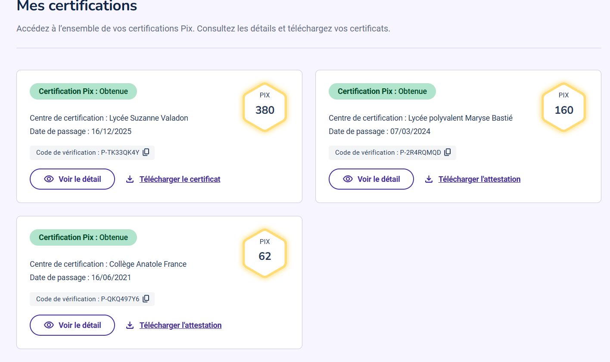

Ces certifications valident mes connaissances théoriques et pratiques sur des outils et des normes spécifiques au monde de l'entreprise.
Score : 442 Pix
Attestation des compétences numériques transversales reconnue par l'État et le monde professionnel.
